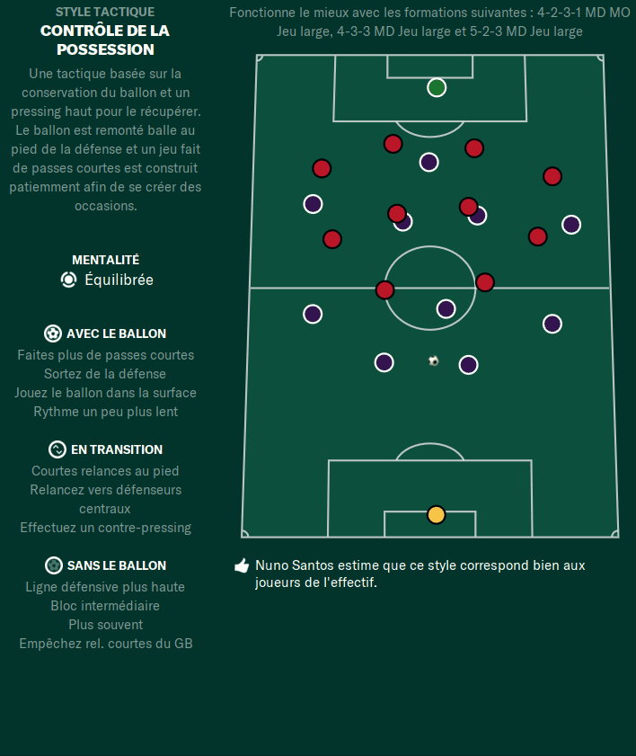

Histoire
Le contrôle de la possession est une tactique de football axée sur la maîtrise du ballon et la domination du jeu. Elle a été popularisée par des équipes comme le FC Barcelone et l'équipe nationale d'Espagne. Cette approche vise à maintenir une possession élevée du ballon pour contrôler le tempo du jeu et créer des occasions d'attaque.
Fonctionnement

Le contrôle de la possession repose sur des passes rapides et précises entre les joueurs de l'équipe. Les joueurs cherchent à maintenir la possession en effectuant des passes courtes et en se déplaçant intelligemment pour offrir des solutions de passes. L'objectif est de fatiguer l'adversaire, d'ouvrir des espaces et de créer des opportunités de progression et de marquer des buts.
Clubs et entraîneurs utilisant le contrôle de la possession
- FC Barcelone - Pep Guardiola, Luis Enrique
- Équipe nationale d'Espagne - Vicente del Bosque, Luis Enrique
- Manchester City - Pep Guardiola